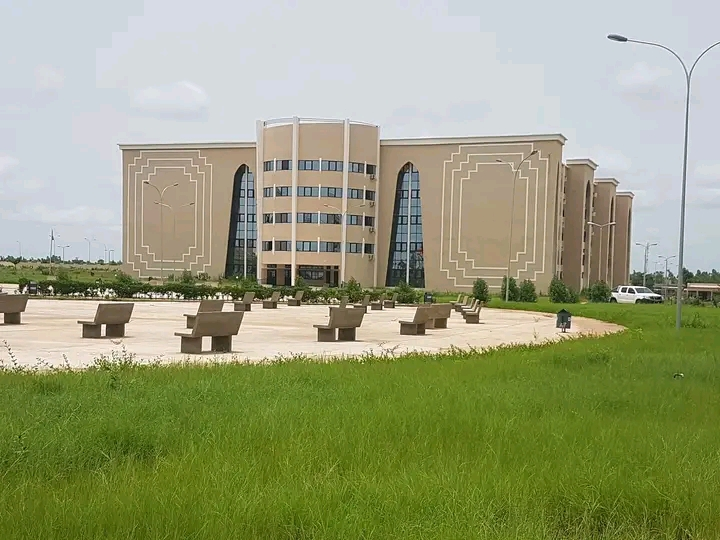

L'Institut des Sciences Appliquées (ISA)

L'institut des sciences appliquée (ISA) est un établissement public d'enseignement supérieur à Bamako, rattaché à l'Université des Sciences, des Techniques et de
Technologies de Bamako (USTTB).
Créé en 2011, il propose des formations professionnalisantes de niveau Licence dans des domaines techniques et scientifiques clés Pour
le développement du Mali.
L'ISA a pour mission de former des cadres intermédiaires compétents, capables de répondre aux besoins du marché de l'emploi malien. Il est structuré en trois départements
principaux :
- Chimie Appliquée (CA)
- Génie Biologie (GB)
- Génie Electrique et Informatique industrielle (GEII)
Ces formations sont conçues pour être à la fois théoriques et pratiques, avec une forte orientation vers les applications industrielles.
L'ISA dispose de huit laboratoires spécialisés pour soutenir l'enseignement et la recherche :
- Chimie analytique
- Volumétrie
- Technologie alimentaire
- Microbiologie
- Automatisme et automatique
- Informatique industrielle
- Electronique
- Electrotechnique
Ces installations permettent aux étudiants de bénéficier d'une formation pratique de qualité.
Conditions d'admission
L'admission à l'ISA se fait principalement sur concours.
Les concours d'entrée sont généralement organisés entre septembre et octobre. Il est conseillé de consulter régulièrement le site officiel de l'ISA ou leurs
réseaux sociaux pour les dates exactes et les modalités d'inscription.
Les conditions varient selon les filières, mais généralement :
- Pour les bacheliers :
- être titulaire d'un baccalauréat scientifique ou technique
- Pour les titulaires de BT2 :
- passer un test oral
Les frais de dossier sont de 5000 F CFA (non remboursables). Les frais de scolarité s'élèvent à 50 000 F CFA pour les étudiants nationaux et à 300 000 F CFA pour les étudiants étrangers.
Débouchés professionnels
Les diplômes de l'ISA peuvent prétendre à divers postes dans les secteurs suivants :
- Industrie chimique et pharmaceutique
- Agroalimentaire
- Santé publique et laboratoires de recherche
- Energie et électricité
- Technologies de l'information et de la communication
Les formations sont conçues pour répondre aux besoins spécifiques du marché de l'emploi malien.